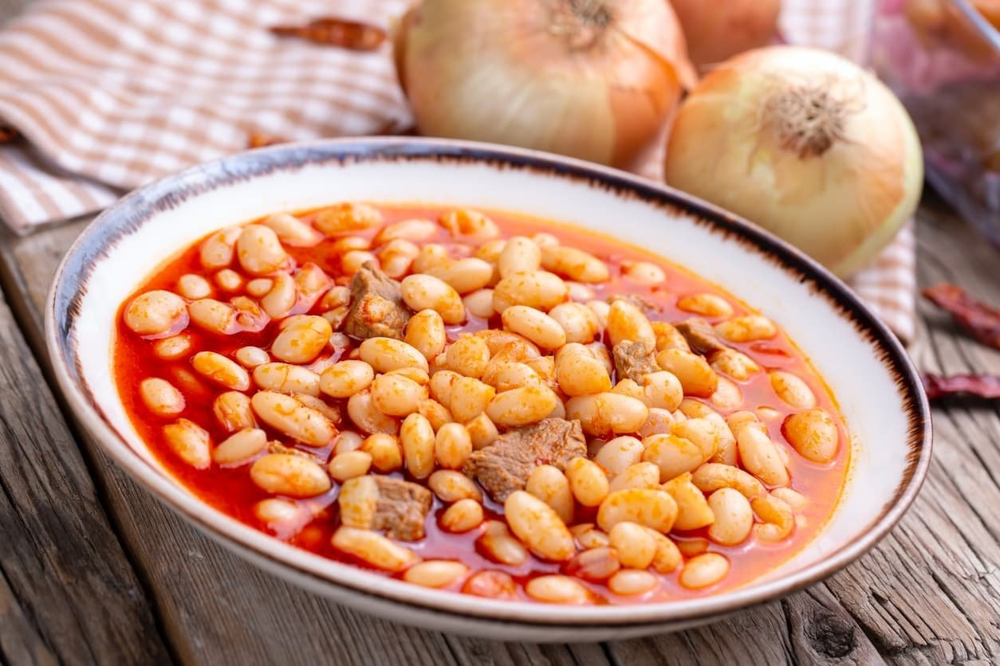

Kuru Fasulye

Description
Contrary to belief, the national dish of Turkey is not Kebab, Lahmacun or Menemen. Instead, many locals will name Kuru Fasulye, a fiery stew of white beans that have been slow-cooked in a rich tomato, pepper and chilli broth.
Ingredients
- 320 g dried white beans (haricot)
- 1 ¾ tbsp salt (24g)
- 00 ml extra virgin olive oil
- 2 onions
- 1 heaped tbsp tomato paste
- 1 heaped tbsp Biber şalçası
- Freshly steamed rice & Turkish pickles to serve
Steps
- Add the beans and 1 tbsp (14g) of the salt to a mixing bowl, cover them generously with water and soak overnight.
- Stir in the tomato paste, pepper paste and black pepper and continue frying until the pastes have dissolved into the oil.
- Carefully pour in the water to stop the frying, then drain the beans, rinse them and add to the casserole as well.
- Trim the chillis and green pepper, cut the green pepper into chunks and add both to the casserole.
- Bring it to a boil, then cover it with a lid and simmer for 75 minutes, stirring every now and then, until the beans are tender.
- Once tender, season them with the remaining ¾ tbsp (10g) of salt and continue cooking for another 10 minutes to let the beans absorb the salt.
- Divide over plates and serve alongside freshly steamed rice and Turkish pickles.